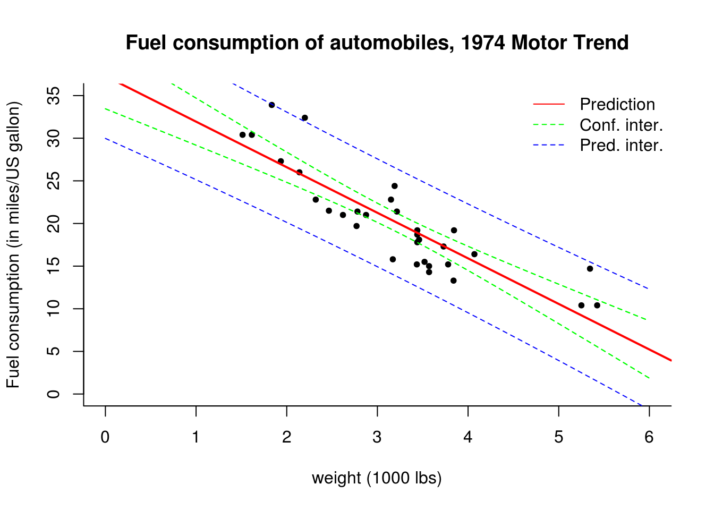

4.1 Confidence and prediction intervals
In the linear model with IID errors \(\boldsymbol{\varepsilon}\sim \mathsf{IID}(0, \sigma^2)\), we have \(\mathsf{Var}(\hat{\boldsymbol{\beta}}) = \sigma^2(\mathbf{X}^\top\mathbf{X})^{-1}\). The standard errors for \(\hat{\boldsymbol{\beta}}\) are then simply the square root of the diagonal entries (which are the variance \(\mathsf{Var}(\hat{\beta}_j)\) for \(j=1, \ldots, p\). Confidence intervals for the coefficients are given by \(\hat{\beta}_i \pm t_{n-p}({0.025})\mathsf{se}(\hat{\beta}_i)\).
We can also draw intervals around the regression line by considering combinations \(\mathbf{x} = (1, \texttt{mpg})\) for different values of \(\texttt{mpg}\) as illustrated below. The reasoning is similar, except that we now obtain the interval for a function of \(\widehat{\boldsymbol{\beta}}\). For each new vector of regressors \(\mathbf{x}^i \equiv \mathbf{c}\), we get new fitted values \(\hat{y}^i= \mathbf{x}^i\widehat{\boldsymbol{\beta}}\) whose variance is, by the delta-method, given by \(\mathsf{Var}(y^i)={\sigma^2}\mathbf{x}^{i\top}(\mathbf{X}^\top\mathbf{X})^{-1}\mathbf{x}^i\). We replace \(\sigma^2\) by the usual estimator \(s^2\) and thus the pointwise confidence interval is given by the usual Student-\(t\) test statistics, with this time \[\hat{y}^i \pm t_{n-p}({0.025})\mathsf{se}(\hat{y}^i) = \mathbf{x}^i\widehat{\boldsymbol{\beta}} \pm t_{n-p}({0.025})\sqrt{s^2\mathbf{x}^{i\top}(\mathbf{X}^\top\mathbf{X})^{-1}\mathbf{x}^i}.\]
For the prediction interval, we consider instead \[ \mathbf{x}^i\widehat{\boldsymbol{\beta}} \pm t_{n-p}({0.025})\sqrt{s^2 \left[ \mathbf{I}_n + \mathbf{x}^{i\top}(\mathbf{X}^\top\mathbf{X})^{-1}\mathbf{x}^i\right]}.\] Provided the model is correct, new observations \(y_{\mathrm{new}}\) should fall 19 times out of 20 within the reported prediction interval.
As we move away from the bulk of the data (average value of \(\mathbf{x}\)), the hyperbolic shape of the intervals becomes visible. Note here how the prediction interval is necessarily wider than the confidence interval (iterated variance formula).
# The function lm and its output
ols <- lm(mpg ~ wt, data = mtcars)
res <- resid(ols)
X <- cbind(1, mtcars$wt)
n <- nrow(X)
s2 <- sum(res^2) / (length(res) - ncol(X))
std_err <- sqrt(diag(s2 * solve(crossprod(X))))
beta_hat <- coef(ols)
#Covariance matrix of (beta0, beta1)
Sigma <- vcov(summary(ols))
#check the calculation
isTRUE(all.equal(Sigma, s2 * solve(crossprod(X)), check.attributes = FALSE))## [1] TRUE#Standard error of estimates
std_err <- sqrt(diag(Sigma))
#Extract leverage values h_ii
leverage <- as.vector(hatvalues(ols))
# Compare with manual calculation from diagonal matrix
leverage_man <- rep(0, n)
XtXinv <- solve(crossprod(X))
for(i in 1:n){
leverage_man[i] <- X[i,] %*% XtXinv %*% X[i,]
}
isTRUE(all.equal(leverage, leverage_man))## [1] TRUE# Plot data set
plot(mpg ~ wt, data = mtcars,
xlab = "weight (1000 lbs)",
ylab = "Fuel consumption (in miles/US gallon)",
main = "Fuel consumption of automobiles, 1974 Motor Trend",
bty = "l", pch = 20, ylim = c(0, 35), xlim = c(0, 6))
abline(beta_hat, col = 'red', lwd = 2)
#Confidence intervals
tqu = qt(0.975, df = nrow(X)- ncol(X))
conf_inter <- cbind(beta_hat - tqu * std_err, beta_hat + tqu * std_err)
#Compare with lm output
confint(ols)## 2.5 % 97.5 %
## (Intercept) 33.450500 41.119753
## wt -6.486308 -4.202635xstar <- seq(0, 6, by = 0.1)
#Confidence interval for prediction using lm output
ystar_confint <- predict(ols, newdata = data.frame(wt = xstar), interval = 'confidence')
lines(xstar, ystar_confint[ ,2], lty = 2, col = 'green')
lines(xstar, ystar_confint[ ,3], lty = 2, col = 'green')
#Prediction interval using lm output
ystar_predint <- predict(ols, newdata = data.frame(wt = xstar), interval = 'prediction')
lines(xstar, ystar_predint[ ,2], lty = 2, col = 'blue')
lines(xstar, ystar_predint[ ,3], lty = 2, col = 'blue')
legend(x = "topright", col = c("red", "green","blue"),
lty = c(1, 2, 2), bty = "n",
legend = c("Prediction","Conf. inter.","Pred. inter."))
The function predict takes as imput a data.frame object containing the same column names as those of the fitted lm object. The names can be obtained from names(ols$model)[-1].
As usual, we can verify we get the same result if we computed the intervals manually.
#Manually (see class notes)
confint_xstar <- tqu * sqrt(s2 * apply(cbind(1, xstar), 1, function(cvec){t(cvec) %*% solve(crossprod(X)) %*% cvec}))
fitted_xstar <- cbind(1, xstar) %*% cbind(beta_hat)
lines(xstar, fitted_xstar - confint_xstar, lty = 2, col = 'green')
lines(xstar, fitted_xstar + confint_xstar, lty = 2, col = 'green')